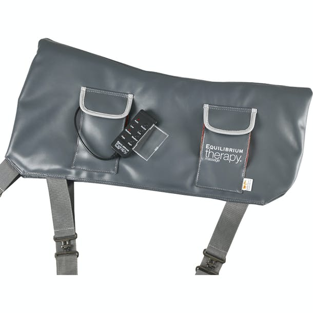
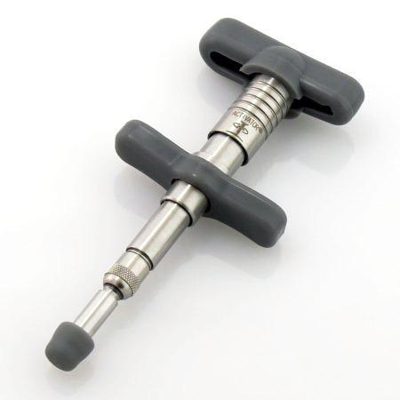

Equusential Blog Blog Posts

Posted on 10 December 2021
What do you think of mechanical massage tools on the horse?
Part 1: What are the most common mechanical massage tools on the market?
Mechanical massage tools are seen in the equine field which may be specifically designed for horses or intended for human use but then used on horses
Common examples include an equine massage pad, equine massage mitt, percussive massage gun, chiropractic activator and a massage pad.
Used correctly: massage tools increase circulation, relieve tension and assist in pain relief.
If incorrectly applied: they can cause harm and negative associations for the horse.
- Equine Massage pads/mitts: are specific equine massage tools from reputable brands. Specifically designed with the horse in mind and generally come with appropriate guides for use on a horse. These tools may provide some relaxation, relief in between bodywork treatments. Designed and tested for equines: these are a generally suitable tool for amateur use provided guidelines and contraindications are followed. 
- Activators: are spring-loaded handheld tools. Activators apply localised force to an area. Activators ought to be used by a qualified chiropractor as part of manual treatment and assessment. Activator use does not form the whole treatment and may not be used by the chiropractor when unnecessary for the presenting issue. Given the direct force emitted by this little tool - you would hope the person using it has the training to know when, where, how and why to use it! 
- Percussion (“massage”) guns: use a motor-driven head intended to strike muscle tissue rapidly and repeatedly. These type of guns can elicit powerful and potentially prolonged percussion over an area. Users should know which muscles are suitable for percussion and when and how to use it.
Equilibrium Therapy Massage Pad
Activators Australia
Homedics Handheld Physio Massager
Activators or massage guns incorrectly applied can cause harm or damage. Results may be painful, ineffective, or unsuitable if used without sufficient knowledge
Percussion instruments could cause an adverse result if used over a bone, ligament, joint, or sensitive or sore muscle area resulting in the horse hurt, frightened or endangering their handler. Your horse may also develop a negative association with you from this experience. A practical example is an amateur using a percussion gun down the Semitendinous muscle of a sensitive horse and getting kicked. For these reasons, I’m hesitant when amateurs use powerful tools such as a percussion gun or activator to attempt to relieve perceived pain or muscular problems in their horse.
In the next part, we discuss the actions and impacts of percussion techniques and tools.